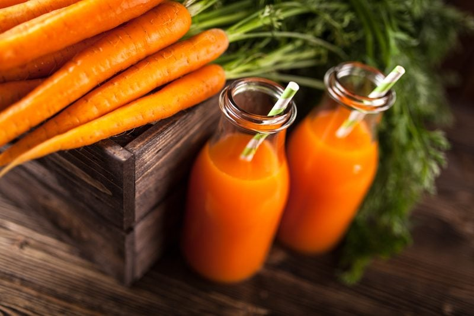
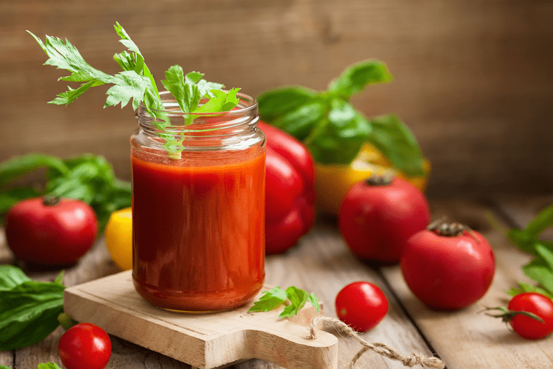
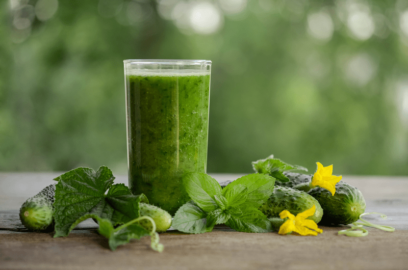

Blending verses Juicing (what’s the difference and benefits)
Supplementing your dietary intake with fresh juice and smoothies can be enjoyable (yep, you heard me right… enjoyable!) as well as an effective tool for maintaining your health. I will be going into detail regarding the difference between juicing and making smoothies, but the main thing that they have in common is the fact that they are both predigested! Through either the masticating (juicing) or blending (smoothies) process, the cellular, fibrous walls are broken down, making it easier for our digestive system to absorb the nutrients being delivered.

Is Juicing Better than Blending?
I say that they BOTH have equal rights to be added to our dietary menus and flow happily through our body, feeding us with high concentrations of antioxidants, antimicrobials, chlorophyll, and many other wonderous nutrients. But remember, juicing and blending doesn’t replace the need for eating whole fruits and veggies.
What’s the Difference Between Juicing and Blending?
Other than the machine used, juicing is a process that extracts water and nutrients from produce and discards the indigestible fiber. Without the fiber, your digestive system doesn’t have to work as hard to break down the food and absorb the nutrients. In fact, it makes the nutrients more readily available to the body in much larger quantities than if you were to eat the fruits and vegetables whole. Blending, on the other hand, retains fiber as well as the nutrients.
Raw juices and smoothies are concentrated foods with high amounts of vitamins and minerals. Let’s first talk about juicing. If you are new to juicing, you will most likely want to start off using only 1/4 part green veggies to 3/4 part sweet veggie/fruit. Don’t go juicing 100% greens and freak out your taste buds. That is a quick-fire way of never wanting to touch your juicer again. Remember, consuming whole healthy foods are all about self-love, and our taste buds need loving too!
When you eat something bitter, sour, or something that tastes awful, what part of the body do you think is responsible for making your lips coil in disgust, or makes you want to take up running so that you can get away from the drink/food in front of you? You guessed it, your taste buds. Think of the party going on in your mouth each time you take a drink or eat a food that is full of vibration! Ok, back to juicing…
Why Juice?

The quality of your life begins with the quality of the foods that sustain it.
There are many therapeutic uses of juicing, and one of them is the cleansing effect that it has on the body.
Juicing is one of the easiest ways to get your daily recommended servings of fruits and veggies every day. It is digested quickly and easily, allowing us the opportunity to increase our body’s natural digestive efficiencies. They also flood our bodies with antioxidants that boost our immune system. Antioxidants in fresh juice can lead to healthier and more radiant hair, skin, and nails that glow from the inside out!
Since juicing separates the fiber from the liquid, you will end up with what is referred to as, veggie/fruit pulp. Don’t toss this. You can use this pulp in raw dehydrated crackers and breads. If you are juicing a lot or perhaps not very often, you can freeze the pulp to use at a later date.
Why Blend? (smoothies)

With blending, the whole fruit or vegetable is used. Simply put, what you put in the blender is what comes out. The volume of the drink, which is often called a smoothie, will be much greater than that of a juice made from the same amount of fruits or vegetables. You get the same benefits as juicing but you will have the added fiber, and it will be more filling.
When creating smoothies, I will suggest the same approach as juicing, “start off using only 1/4 part green veggies to 3/4 part sweet veggie/fruit.” Smoothies retain the fiber from the pulp which can help you feel fuller and improve your digestive health. Also, you can add other types of foods to smoothies like nuts, seeds, and yogurts to increase your intake of healthy protein and fats.
Let me briefly touch on five fruits/veggies that can have a significant impact on your body whether you’re juicing or blending.
- Apples – they are a wonderful digestive aid, acts as a laxative, and helps to detoxify the blood.
- Beets – they are perfect for cleansing the liver, stimulate bowel movements, and are high in iron.
- Carrots – are a great source of Vitamin A, B, C, D, E, and are alkalizing to the body.
- Celery – they are a thirst quencher, wonderful for nerve health, and are high in sodium.
- Kale – high in chlorophyll, great for cleansing the kidneys, and add calcium and protein to your diet.
Fiber or No Fiber, which is better for me?
Whether you juice or make smoothies, you will still get some fiber. There are two kinds of fiber, soluble and insoluble. Soluble fiber remains in the juice even when you take out the pulp. It absorbs water in the intestines, forming a gel that helps slow the transit of food through your digestive tract. It also acts as pre-biotic to support healthy bacteria in the gut.
Insoluble fiber remains in your smoothie as the pulp. It makes you feel full because it expands in your stomach. This fiber helps keep you regular as well as adding bulk to your stool.
Here’s why both juicing and blending are great…
We all struggle with getting enough veggies and fruits into our daily diet. No matter which one you choose, they will both help you dramatically increase your intake. Both forms are also great for adventuring into veggies that you might never have looked or sneezed at otherwise. Do you eat bok choy? No? Juice it! Do you eat dandelion leaves? No? Toss a few in a smoothie! You get the idea.
Disclaimer
This website is not intended to provide medical advice. All content, including text, graphics, images, and information available on this site is for general informational, entertainment, and educational purposes only. The content is not intended to be a substitute for professional diagnosis or treatment. The author of this site is not responsible for any adverse effects that may occur from the application of the information on this site. You are encouraged to make your own healthcare decisions, based on your research and in partnership with a qualified healthcare professional.
© AmieSue.com